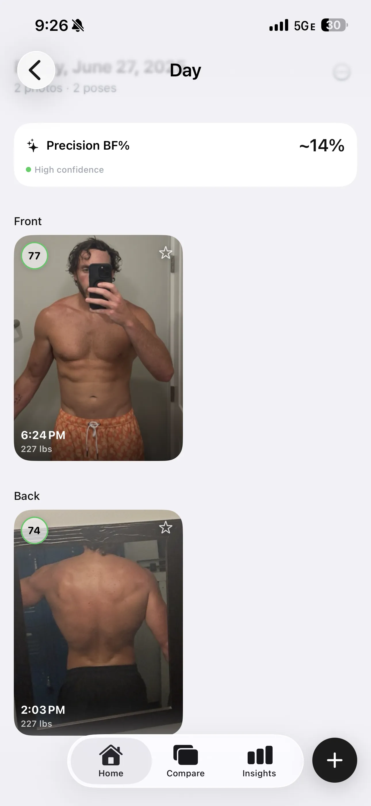
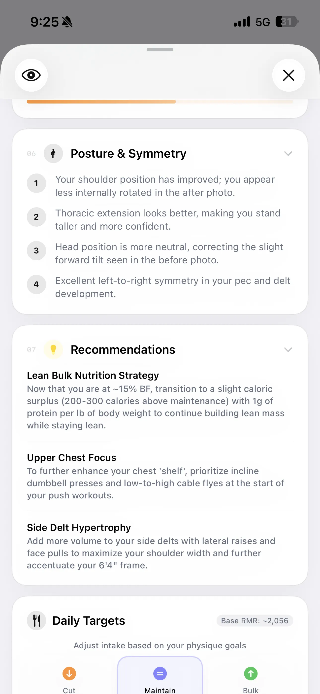

Is AI Body Fat Analysis Accurate? A 2025 Study Says Yes
For years, the fitness industry treated expensive DEXA scans as the only reliable way to measure body composition. But new clinical research confirms that the era of highly accurate photo-based tracking has arrived.

The beta is live — try it free.
Join the Beta on TestFlightWhen people hear about AI body composition tracking, skepticism is usually the first reaction. After all, if a $150 medical-grade DEXA machine or a trained professional with skinfold calipers is required to get a "true" body fat percentage, how could a simple gym selfie possibly compete?
But the narrative that you need to spend hundreds of dollars and book clinical appointments to get accurate results is rapidly becoming outdated. The technology powering AI visual estimation has made a generational leap. And recent scientific literature is finally catching up to prove it.
A recent AI body fat photo accuracy study published in 2025 put these visual models to the ultimate test against the "gold standard" clinical DEXA scan. The results completely rewrite how we should think about fitness tracking.
The Study: AI Photos vs. DEXA, Scales, & Calipers
To determine if 2D photos could accurately predict body fat, a team of researchers ran a massive head-to-head comparison involving 1,273 adults of varying ages, sexes, and BMI ranges.
They measured every participant using a clinical DEXA scan (Dual-energy X-ray absorptiometry) to establish the objective truth. Then, they tested those same participants against a suite of popular alternatives:
- Bioelectrical Impedance Analysis (BIA) — Two popular models of smart scales (InBody-270 and Omron HBF-514).
- Skinfold Calipers — The traditional pinch test performed by a certified professional.
- A-Mode Ultrasound — Localized tissue scanning.
- AI 2D Photo Analysis — An automated model extracting geometric body features from two smartphone photos (front and side profiles).
The Results Were Definitive
The AI 2D photo method achieved an astonishing 0.98 Concordance Correlation Coefficient (CCC) with the DEXA scan results — the highest agreement of all methods tested. This effectively means the AI photo estimation operated interchangeably with a clinical medical scan.
Crucially, the AI approach outperformed leading BIA smart scales, which only managed moderate agreement (0.91-0.92 CCC) due to their notorious sensitivity to daily water weight and hydration fluctuations. It also proved more reliable across both sexes and diverse BMI categories, showing no proportional bias.
Taking Accuracy Further: Precision BF% in GainFrame
The research is clear: visual body fat estimation is scientifically sound. But at GainFrame, we recognized that relying on a single photo still has limitations—lighting, camera angle, and shadows can occasionally introduce noise.
Our response is a pioneering feature called Precision BF%.

Instead of relying entirely on one snapshot in time, GainFrame leverages a composite model. It analyzes multiple photos across your timeline, layering that visual evaluation with your hard biometrics (age, sex, height, weight). This cross-referencing smooths out anomalies—like that one day you took a photo in a poorly lit hotel bathroom—yielding the absolute tightest body fat approximation short of visiting a laboratory.
Beyond the Number: Trend Tracking and Posture
Having clinical-grade body fat numbers via your phone is powerful, but a raw percentage only tells part of your story. The utility of the AI expands exponentially when you can observe how your body is physically manifesting that number over time.

GainFrame plots your AI body composition data into longitudinal trend lines. It removes the emotional weight of day-to-day fluctuations and visualizes the true trajectory of your fat loss or muscle gain phases.
Moreover, visual AI can perform checks that a DEXA scan simply cannot. Because the algorithm analyzes the geometric structure of your anatomy, it automatically spots asymmetries in muscle groups and red flags early postural issues.

Spotting a severe anterior pelvic tilt or noticeable shoulder drop early provides the chance to intervene and adjust your training. It shifts your photos from just capturing memories to serving as a diagnostic tool for injury prevention.
The Ultimate Feedback Loop: Workouts + Visual Analysis
You can't manage what you don't measure. Combining these intelligent photo scans with your daily training efforts completes the loop.

GainFrame imports your raw workout data directly from Apple Health and Hevy. By automatically matching the exact progression of your visual body fat alongside your progressive overload logs, you get the absolute clearest picture of whether your current routine is paying off in real-world inches and aesthetics.
If you're still relying on the unreliable numbers the scale spits out on Monday morning to determine whether your diet is working, the science suggests you are making decisions on flawed data. It's time to let your photos speak for themselves.